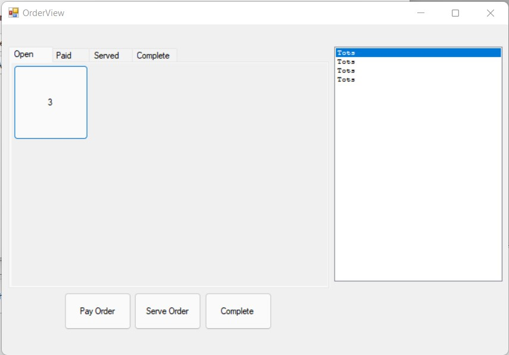

Here is the window that will allow you to view and manage the status of an order. There are four different status for an order: "Open", "Paid","Served","Complete". The orders will be sorted according to their status in the table and by their order number. Selecting the order will allow the user to change the order status and view the items in that order.
1. Navigate the order status tabs to locate the order number
2. Press the button labeled with the order number you would like to view
3. The order contents will appear in the list on the right.
1. Navigate the order status tabs to locate the order number
2. Press the button labeled with the order number you would like to update
3. Update the order status by pressing a bottom button
a. "Pay Order" will move the order to "Paid
b. "Serve Order" will move the order to "Served"
c. "Complete" will move the order to "Complete"